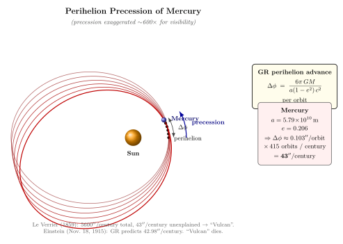

Mercury 近日点为什么每百年多偏 43 角秒?
从这一节开始, 我们离开抽象的张量代数, 把过去 15 节铺出来的整个 GR 框架, 一条条逐个拿到现实里去对照. 第 6 部分一共 5 篇文章, 每一篇都对应一项 GR 的实验检验: Mercury 进动 (本篇), GPS 校时 (第 27), LIGO 引力波 (第 28), EHT 黑洞阴影 (第 29), 然后落到量子引力的开放疆域 (第 30). 这条线的开端必须是 Mercury — 它是历史上 GR 解释的第一个"原本没法解释"的现象, 也是 Einstein 自己在 1915 年那个寒冷的 11 月用初步的场方程解出来后, 给 Sommerfeld 写信说"我激动得几天没法工作"的那一道题.
故事的吸引力在于: 这个反常进动不是 Einstein 看着 Mercury 算出来后才发现的; 它是一道悬挂在天文学家头上 56 年的未解之谜. 1859 年 Le Verrier — 同一个人, 1846 年凭天王星轨道的反常用纸笔预言了 Neptune 的位置, 是当时最受敬仰的天体力学家 — 把 Mercury 近日点的进动算了一遍, 发现牛顿引力少了 $43''/$ 世纪. 他做了个再合理不过的推断: 在 Mercury 内侧应该还有一颗未知的小行星 (或一群微小行星), 给 Vulcan 命名, 1860–1915 年间无数天文学家声称看见过它. 1915 年 11 月 Einstein 用 GR 把这 $43''$ 解释清楚的瞬间, Vulcan 这个虚构天体彻底退出舞台. 这是物理学史上最干净的一次"理论替代未知物体"的范例.
一、Le Verrier 1859: $43''$ 是怎么剩下来的
先把数字背景说清. 从地球上观察, Mercury 的近日点 (它椭圆轨道上离 Sun 最近的那个点) 不是固定不动的; 它在缓慢"走", 也就是椭圆的长轴方向在缓慢旋转. 19 世纪积累的几十年观测拼起来给出: 近日点在天球上每世纪旋转 $5600''$ (约 $1.56°$). 这个数字本身不奇怪, 因为有几个明显的来源:
(i) 地球分点的岁差. 我们在地球上量天体经度, 是相对春分点; 春分点本身因为地球自转轴进动每世纪走 $5025''$. 这跟 Mercury 没关系, 但你扣掉它就只剩 Mercury 自己的进动 $\sim 575''$.
(ii) 其他行星的引力扰动. Mercury 在 Sun 的引力场里走椭圆, 但 Venus, Earth, Mars, 尤其是 Jupiter 的引力会扰动它. 用经典的 Lagrange 行星方程 (这是天体力学 18-19 世纪的中心工作) 可以算出, 这些扰动给 Mercury 近日点贡献 $\sim 532''/$ 世纪.
把 (i) 和 (ii) 都扣掉:
$$ \Delta\phi_{\rm 观测} \;-\; \Delta\phi_{\rm 岁差} \;-\; \Delta\phi_{\rm 行星扰动} \;\approx\; 5600'' - 5025'' - 532'' \;\approx\; 43'' \;\;/\,\mathrm{century}. $$
剩下的 $43''$, 用所有已知物理 (牛顿引力 + 经典力学 + 已知行星) 都解释不掉. Le Verrier 当年报的数字是 $38''\pm 8''$, 1882 年 Newcomb 重新算到 $43''$, 现代精测值 $43.11''\pm 0.21''/$ 世纪.
Le Verrier 的反应非常合理: 必有未观测到的天体在扰动 Mercury. 给定他自己 1846 年用同一思路成功预言 Neptune 的辉煌战绩, 这个推论几乎不容置疑. 假说提出一颗叫 Vulcan 的小行星, 在 Mercury 内侧, 离 Sun 太近所以观测困难. 1859–1915 这 56 年里, 法国乡村医生 Lescarbault 1859 年宣称看到过它的凌日, Le Verrier 还为他申请勋章; 多次日全食探险都试图捕捉 Vulcan 的剪影. 但所有"目击"都经不起重复. Vulcan 不存在.
反常永远是物理学最珍贵的东西. 19 世纪两个最显眼的反常 — Mercury 进动 + 黑体辐射的紫外灾难 — 一个引出了 GR, 一个引出了量子论. 一篇好物理文章如果能让你对"反常"这两个字心存敬意, 任务就完成了一半.
二、Schwarzschild 有效势: 多出来的那一项
现在用 GR 把这 $43''$ 算出来. 我们用第 12 节的 Schwarzschild 度规 (Sun 看作球对称静态真空, $r_s = 2GM_\odot/c^2 \approx 2.95\,\mathrm{km}$):
$$ ds^2 \;=\; -\Big(1-\tfrac{r_s}{r}\Big)c^2\,dt^2 \;+\; \Big(1-\tfrac{r_s}{r}\Big)^{-1}\,dr^2 \;+\; r^2\big(d\theta^2+\sin^2\theta\,d\phi^2\big). $$
对赤道平面 ($\theta=\pi/2$) 上的类时测地线, Mercury 是一个质量可忽略的 test particle. 利用度规两个 Killing 向量 $\partial_t$ 和 $\partial_\phi$, 守恒能量与角动量分别是
$$ \tilde E \;=\; \Big(1-\tfrac{r_s}{r}\Big)c^2\frac{dt}{d\tau}, \qquad \ell \;=\; r^2\frac{d\phi}{d\tau}. $$
把 $ds^2/d\tau^2=-c^2$ 展开, 把 $dt/d\tau$ 与 $d\phi/d\tau$ 用 $\tilde E$ 和 $\ell$ 替掉, 就得到 $r$ 的能量方程
$$ \frac{1}{2}\Big(\frac{dr}{d\tau}\Big)^2 \;+\; V_{\rm eff}(r) \;=\; \mathrm{const}, \qquad V_{\rm eff}(r) \;=\; -\frac{GM}{r} \;+\; \frac{\ell^2}{2 r^2} \;-\; \frac{GM\,\ell^2}{c^2\, r^3}. \tag{1} $$
这就是Schwarzschild 有效势. 前两项 $-GM/r + \ell^2/(2r^2)$ 是牛顿径向势 — 引力 + 离心势垒, Kepler 椭圆轨道的源头. 第三项 $-GM\ell^2/(c^2 r^3)$ 是纯 GR 修正: 它在 $r\to\infty$ 时趋零, 但在小 $r$ 处变成 $r^{-3}$ 的吸引项, 可以打破牛顿轨道的闭合性.
把它代到日常物理感觉里. 牛顿 Kepler 问题里, 引力 + 离心势垒在某个 $r_{\rm min}$ 形成势阱底; 粒子在阱里来回振荡, 振荡周期恰好等于绕中心一周的角向周期 — 这是 Bertrand 定理: 仅 $1/r$ 与 $r^2$ 两类势给出闭合轨道. Mercury 的椭圆是闭合的精确周期解. 现在给 $V_{\rm eff}$ 加一个 $-1/r^3$ 修正, 径向振荡周期 $T_r$ 与角向周期 $T_\phi$ 不再恰好相等; 每过一个 $T_r$, 角度多走一点点, 椭圆的长轴方向逐周期前进. 这就是近日点进动的几何原因.
请注意: $-GM\ell^2/(c^2 r^3)$ 这一项不是凑出来的, 而是 Schwarzschild 度规里 $g_{tt}=-(1-r_s/r)c^2$ 与 $g_{rr}=(1-r_s/r)^{-1}$ 联合产生的几何效应. 你甚至可以说: GR 对引力做的全部修改, 在 Mercury 这一题里凝结到一个 $-1/r^3$ 的小项. 这就是为什么"具体计算"如此重要 — 没有这道题, 你只会觉得"GR 是抽象的几何", 不会感受到它在数字上多么薄但多么犀利.
三、近日点前进角的推导
我们要算的是: 一个轨道周期内, 角度 $\phi$ 多走了多少. 把测地线方程换成 $u\equiv 1/r$ 的形式. 利用 $\ell = r^2\,d\phi/d\tau$ 把 $d/d\tau$ 换成 $d/d\phi$, 经过几行代数, 类时测地线变成著名的 Binet 方程的相对论版本
$$ \frac{d^2 u}{d\phi^2} \;+\; u \;=\; \frac{GM}{\ell^2} \;+\; \frac{3GM}{c^2}\,u^2. \tag{2} $$
右边第一项 $GM/\ell^2 \equiv u_0$ 是常数; 没有第二项时, $u(\phi) = u_0\,(1+e\cos\phi)$ 就是闭合 Kepler 椭圆 ($e$ 是偏心率, 近日点固定在 $\phi=0$). 第二项 $(3GM/c^2)u^2$ 是 GR 修正项 — 它就是 (1) 式里那个 $-GM\ell^2/(c^2 r^3)$ 在 Binet 方程里的样子.
这是个微扰问题. 设 $u=u_0(1+e\cos\alpha\phi)$ 试着解, 把它代入 (2), 把右边的 $u^2$ 展开, 只保留对 $\alpha$ 偏离 1 的领头修正 (即"长期项" — 跟 $\phi$ 同频的部分会累积成进动, 不能忽略, 而其他频率项会被吸收到振幅里). 经过标准的二阶微扰代数, 频率得到
$$ \alpha \;\approx\; 1 \;-\; \frac{3GM}{c^2}\,u_0 \;=\; 1 \;-\; \frac{3(GM)^2}{c^2\,\ell^2}. $$
径向回到下一次最小 (下一次近日点) 时 $\alpha\phi$ 走了 $2\pi$, 即 $\phi$ 实际走了 $2\pi/\alpha\approx 2\pi(1+3GM u_0/c^2) = 2\pi + 6\pi G M u_0/c^2$. 多出来那部分就是每周期的前进角:
$$ \boxed{\;\;\Delta\phi \;=\; \frac{6\pi GM}{a(1-e^2)\,c^2}\;\;} \tag{3} $$
(用了 $u_0 = GM/\ell^2 = 1/[a(1-e^2)]$, 这是 Kepler 椭圆的标准关系: $\ell^2 = GMa(1-e^2)$.) 这就是 Einstein 1915 年那一行公式. 从 Schwarzschild 度规到 (3), 总共四五行代数; 这是 GR 历史上最有名的"四五行".
把它的物理意义复述一遍: 椭圆没有变得不闭合得乱七八糟, 它仍然是椭圆; 它只是每走一周, 自己整体顺着轨道方向旋转 $\Delta\phi$ 角. Mercury 长期的轨迹画出来是一朵慢慢张开的"花瓣", 每个花瓣都是一个不闭合差 $\Delta\phi$ 的椭圆.

四、Mercury 数字: 415 个轨道, $43''/$ 世纪
把数字代进公式 (3). Mercury 的轨道参数 (现代精测):
$$ a \;=\; 5.7909\times 10^{10}\,\mathrm{m}, \qquad e \;=\; 0.20563. $$
所以 $1-e^2 = 1 - 0.04228 = 0.95772$. 太阳 $GM_\odot = 1.3271\times 10^{20}\,\mathrm{m^3/s^2}$, $c^2 = 8.988\times 10^{16}\,\mathrm{m^2/s^2}$. 代入:
$$ \Delta\phi \;=\; \frac{6\pi\,(1.3271\times 10^{20})}{(5.7909\times 10^{10})\cdot(0.95772)\cdot(8.988\times 10^{16})} \;\approx\; 5.018\times 10^{-7}\,\mathrm{rad/orbit}. $$
把弧度换成角秒, $1\,\mathrm{rad} = 206\,265''$:
$$ \Delta\phi \;\approx\; 5.018\times 10^{-7}\times 206\,265 \;\approx\; 0.1035''\,/\,\mathrm{orbit}. $$
Mercury 公转周期 $T = 87.969$ 天, 一个儒略世纪 = $36\,525$ 天, 所以一世纪轨道数 $N = 36525/87.969 \approx 415.2$. 一世纪累计:
$$ \Delta\phi_{\rm century} \;\approx\; 0.1035''\times 415.2 \;\approx\; 42.98''\,/\,\mathrm{century}. $$
这就是 GR 给的预测. 实际观测值 $43.11'' \pm 0.21''/$ 世纪 (Will 2014 综述), 误差区间内完美吻合. 这个数字小到难以置信 — 一世纪 $43''$ 等于一个百年的轨道总走 $5600''$ 里多走的那不到 $0.8\%$, 同时大到任何已知机制都解释不掉. GR 用一行公式同时找回了 $43''$, 并用 $0$ 个新参数: 公式 (3) 里没有可调常数, 你要么承认 GR 给出 $42.98''$, 要么承认它不给.
这种"零参数预测吻合观测"的事件, 在物理学史上极少. 对比 Newton 引力解释行星运动 (是 Newton 构造定律去匹配 Kepler), Mercury 进动是 Einstein 已经从等效原理出发推完全部 GR, 然后事后发现它解出 $43''$. 这是一种性质完全不同的成功. Einstein 11 月 18 日给 Schwarzschild 的信里写: "我激动得有几天工作不下去 — 你能想象当我意识到方程把进动算出来时的喜悦吗?"
顺便一记: 进动效应不是 Mercury 独有, 它对所有行星都成立. Venus 是 $8.6''/$ 世纪, Earth 是 $3.84''/$ 世纪, 远日的行星 $a$ 大, $\Delta\phi\propto 1/a$, 所以效应小到几乎测不出. Mercury 是最内侧且偏心率较大的行星, $a$ 小、$1-e^2$ 也小, 所以效应最显眼. 这也是 Le Verrier 一开始就盯上 Mercury 的物理原因 — 不是因为它特别, 而是因为它效应最大.
五、把"等效原理 → 进动"这条因果链拉直
我们在第 1 节用 Einstein 的电梯思想实验把"引力是几何"这个直觉立起来; 第 6-10 节把度规、测地线、Riemann 张量、Einstein 张量这一套数学搭起来; 第 11 节写下场方程 $G_{\mu\nu}=8\pi G T_{\mu\nu}/c^4$; 第 12 节解出 Schwarzschild 度规. 这一节我们做了一件事: 把这条 $r_s/r$ 的几何修正, 通过一个具体测地线计算, 翻译成 Mercury 上每世纪 $43''$ 这个具体数字. 等效原理 → Mercury 数字, 这条链条整整长了 12 节, 但每一步都是必经.
三件值得记住的细节. 其一, GR 修正项 $-GM\ell^2/(c^2 r^3)$ 在圆形轨道 ($e=0$) 下也存在, 它把圆轨道的旋转频率改了一点点, 但因为没有近日点, 没有可观察的"进动". Mercury 偏心 $e=0.206$ 提供了让效应可视化的钩子. 其二, 进动方向是顺着公转方向 (向前), 跟 Mercury 自身的轨道运行方向一致 — 这从 (3) 的正号直接读出. 其三, $\Delta\phi$ 与 $r_s$ 同阶: $\Delta\phi \sim r_s/[a(1-e^2)] \sim 3\,\mathrm{km}/8\times 10^{10}\,\mathrm{m}\sim 4\times 10^{-8}$ — 这个微弱的尺度比例, 加上 415 个轨道的累积, 才到 $43''$.
这道题的成功反过来照亮了一件事. 1860 年代很多人怀疑过, 是不是 Sun 的扁率 (rotation oblateness) 在产生这个 $43''$. 如果 Sun 内部有相当大的转动惯量分布, 它不是完美球, 引力势会有一个 $J_2$ 四极项, 也能给 Mercury 的近日点进动贡献. 但 Helioseismology 从太阳震荡模式上把 $J_2$ 锁到 $\sim 2\times 10^{-7}$, 对应 $\sim 0.03''/$ 世纪, 远不够 $43''$. GR 才是这 $43''$ 的唯一来源. 1976 年 Dicke 与 Brans 一度提出 $J_2$ 异常大的修正引力 (Brans-Dicke 标量-张量引力, 它会从 $43''$ 拿走一部分), 这个理论后来被 Helioseismology 数据排除.
第 27 节我们继续这条"GR 在身边"的路: 你口袋里的 GPS 定位, 每天 24 小时累计要校正 $38\,\mu s$, 其中 $45\,\mu s$ 来自 GR 的引力时间膨胀, $-7\,\mu s$ 来自 SR 的时间膨胀. 跟 Mercury 一样, 这是几何在数字上的痕迹.
小结
这一节我们完成了 GR 的第一次实验检验. Mercury 近日点每世纪反常进动 $43''$ 这个 1859 年 Le Verrier 留下的天文学谜团 — 56 年间被认为是 Vulcan 这颗未发现行星的存在证据 — 在 1915 年 11 月 Einstein 用初步的场方程一举解决. 我们沿 Schwarzschild 度规导出含 $-1/r^3$ 修正的有效势 (1), 把测地线写成 Binet 方程的相对论版本 (2), 用微扰法解出每周期前进角 $\Delta\phi=6\pi GM/[a(1-e^2)c^2]$ (3). 代入 Mercury 参数 $a=5.79\times 10^{10}\,\mathrm{m}$, $e=0.206$, 得 $0.103''/$ 周期, 一世纪 415 个轨道累计 $42.98''$, 与现代精测 $43.11''\pm 0.21''$ 在误差内完美吻合 — 而这个数字是 GR 在不引入任何可调参数的情况下一行公式给出的. 这是物理学史上最干净的一次"理论替代未观察到的物体": Vulcan 不存在, 时空弯曲存在. 下一节我们走出天文台, 用同一个度规去解释你手机里 GPS 接收机每天必做的 $38\,\mu s$ 校正.
▲